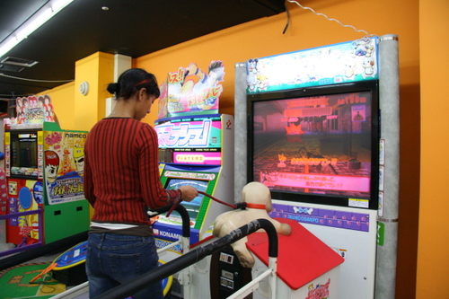
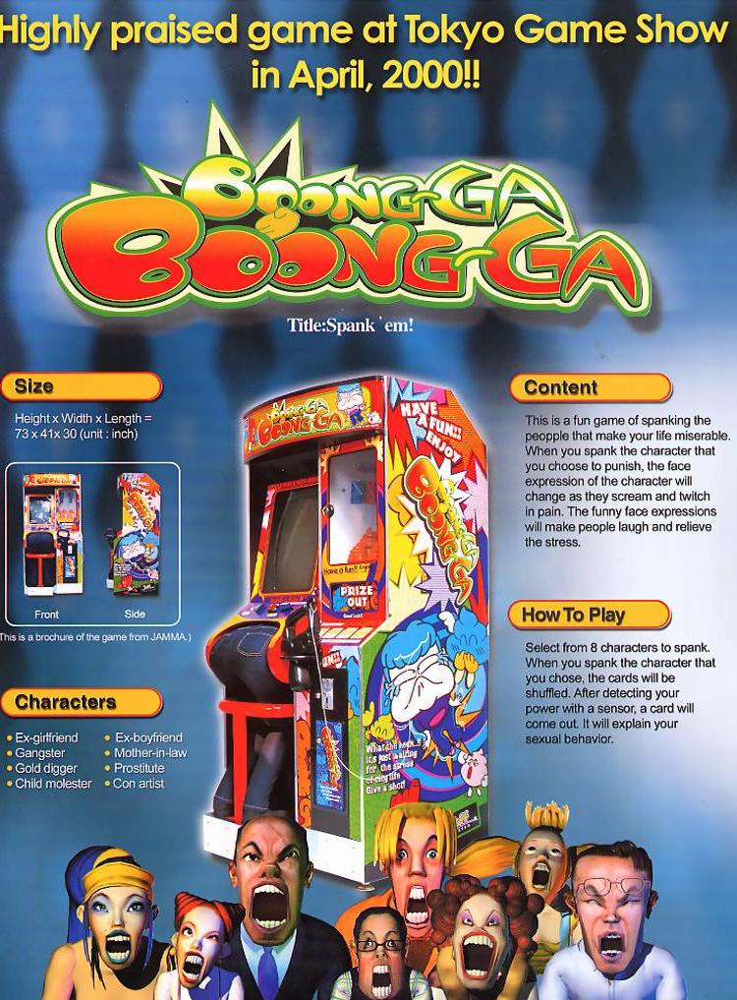
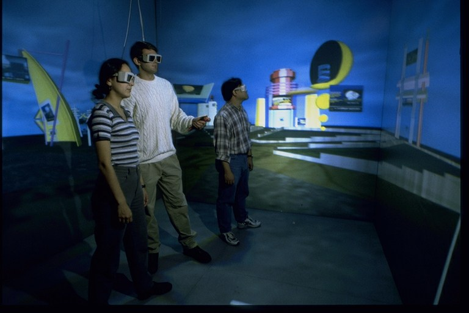
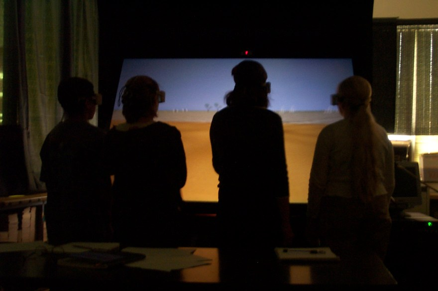
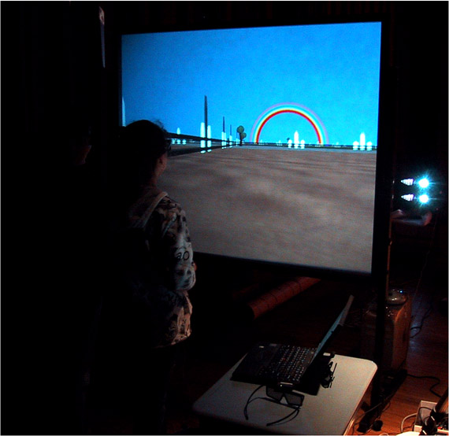
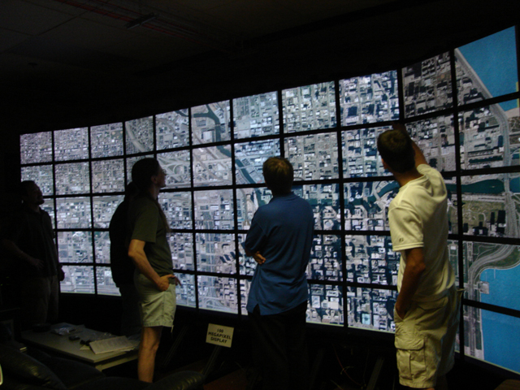
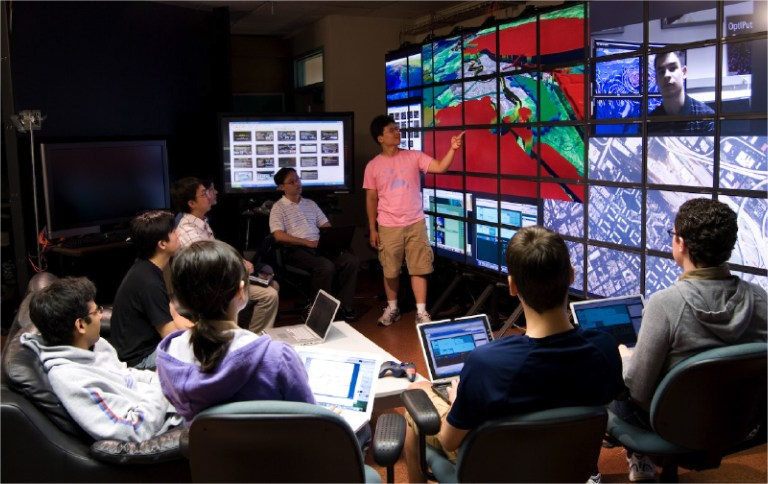
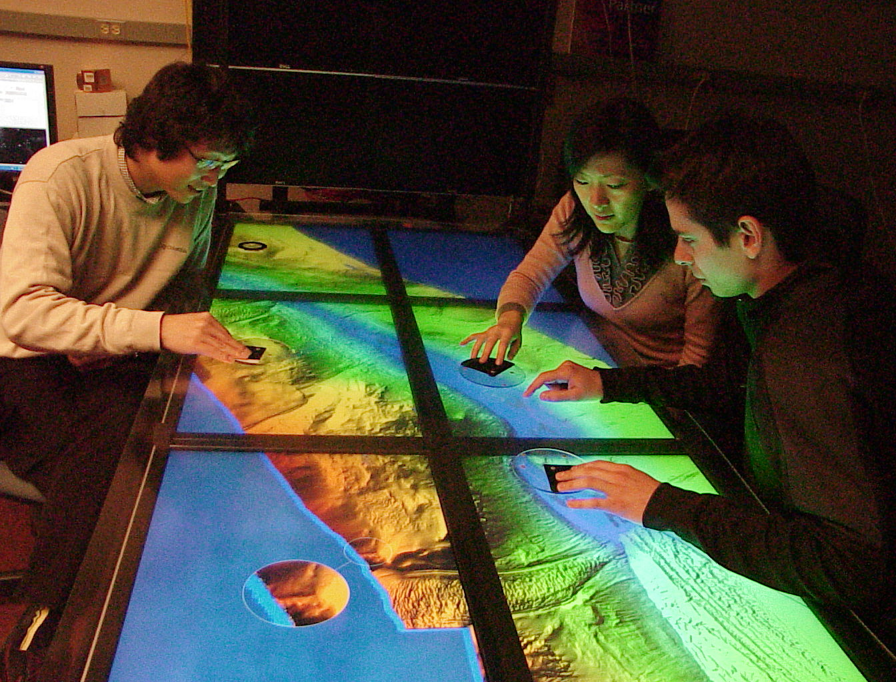
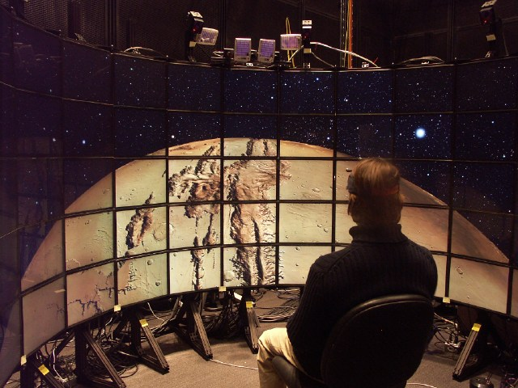
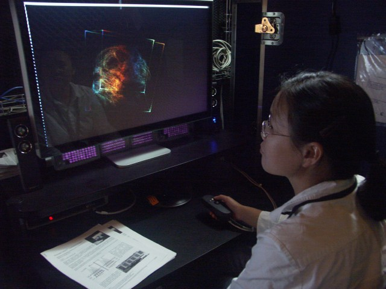

(material from: Designing the User Interface 3rd edition by Ben Schneiderman, Human-Computer Interaction 2nd edition by Dix and friends)
Typically people work in groups which must cooperate.
There is a need to provide tools for groups to collaborate in the same room, and a need to help individuals and groups collaborate over distance.
Teams working in the same room:
Technology gives more opportunity for real-time collaboration across time and distance
Time Space Matrix (Ellis et al 1991)
| Same Time (synchronous) | Different Time (asynchronous) | |
| Different Place | telephone, computer-mediated chat video conferencing shared whiteboard shared PC windows |
letter, email |
| Same Place | face to face conversation meeting rooms |
post-it note |
telephone is popular
email is popular
facebook / blogs forums are popular
twitter is popular
videoconferencing is getting popular especially with tools like
skype, ichat etc.
text chatting is getting extremely popular
desktop sharing is less popular
However popularity doesn't map directly onto 'success'
- does email increase productivity?
- does videoconferencing reduce travel?
Its hard to perform studies
Different types of work can be done by teams in person
and remotely. The Team Performance Model shows how work modes
change over time. One of the important things is the importance of
groups meeting in person for steps 1 and 2 before going on to the
later steps which can be done remotely.
People are used to certain 'norms' in interpersonal communication. These can be social norms in how one acts in certain situations (how one acts as a student in a classroom, or talking to a co-worker, how one talks to a group of friends, or giving a presentation, even just the idea that you take turns during a conversation), concepts of personal space.
People are used to audio-only communication over the
telephone.
People are getting used to text-only communication via
messenger services, chat rooms, twitter/messenger services on
smart phones, etc.
People are getting used to audio+video communication via
cameras in computers, smart phones and tablets
Lots of issues involved:
-When we talk, we tend to stand with our heads a certain distance apart. Talking further apart seems somewhat uncomfortable, talking closer together seems very uncomfortable.
- Hearing just a person's voice versus seeing
their face we lose many things
- Affects how video conferencing systems are
setup
- Audio is critical
- Things get much harder when there
are more than 2 sites
- What is the meeting about? What documents
need to be shared to maintain a common context?
- Want to be able to see your collaborators and
the documents you are talking about at the same time
- Public space and private space
- Gestures also important
- More information being passed than just the
voice/words/tone
- Conversation (turn taking)
working in groups is much more than a technological issue - also
an issue of social organization
in different group activities in a physical room there are
different room layouts
Better / more technology solves many of these problems,
but making it convenient still involves a good user interface for
setting up the meeting and working conveniently during the meeting
What infrastructure is available?
There are a wide variety of computer interfaces that
look nothing like a desktop computer. We use many of them every
day when driving a car or cooking rice. Other exotic interfaces
are more obvious, especially in video arcades:
driving a train
arm wrestling:
playing drums:
Dog Walking:

piloting a mech:

and some that are just hard to believe they could make it to
market:

at home there is a large variety of game controllers
from dance pads, to guitar hero guitars, and all of the
possibilities that the wiimote brings.
And now some things that go on here at UIC that are more exotic
than what we have covered in class. UIC has been one of the
leading research sites into advanced visualization technology for
over 15 years. With these devices the types of interaction that a
person can have are different ... in some ways better, in some
ways worse.
and this is also a not-so-subtle attempt to get you to
consider maybe going on to graduate school ...
In 1992 this lab redefined the field of virtual reality
with the introduction of the CAVE, taking a research area that had
been focused on single-user head-mounted displays and moving it
towards shared experiences inside rooms built from projection
screens.
The CAVE was a 10 foot x 10 foot x 10 foor (3 meter x 3
meter x 3 meter) room with stereoscopic images rear projected onto
the walls, and front projected onto the floor, and a magnetic
tracking system to locate the primary user, so that the visuals
could be updated based on that user's position and hear
orientation.

Other smaller devices would follow including the
ImmersaDesk and the PARIS. The ImmersaDesk was a drafting table
sized single-screen version of the CAVE using the same technology.
The PARIS would add a haptic (touch) component and a half-silvered
mirror to allow the users hands and the computer graphics to both
be visible at the same time.

Other groups would build related devices including 6
sided CAVEs, projection tables, etc.
This is a GeoWall. The photograph was taken in the
auditorium of Abraham Lincoln elementary school in Oak Park where
we were doing so research.

This allowed us to build the highest resolution display available
in 2004 at 104 megapixels. The CAVE had a resolution of
roughly 4 megapixels. Since that time higher resolution
tiled displays have been built. We can use this display to show a
single application, or show multiple applications simultaneously.


While screens are good for presenting to groups, tables
are more appropriate for smaller groups actively working together.

We are also working on autostereoscopic displays - so users can
see stereo on LCD panels without wearing special glasses. There
are some commercial products out there that do this on single
screens. We are doing it with multiple screens and adding tracking
so the user can move around.
 
Right now we are moving to HD (1920 x 1080) as the new default video resolution in the home. Theatres are moving to 4K (4096 x 2160) as their new standard, which is basically 4X HD resolution. There are (expensive) flat panels and projectors out now that can handle that resolution. The Muvico theatres in Rosemont are one place that has these projectors installed in the area. The highest resolution consumer computer monitors are the 30" 2560 x 1600 panels sold by Apple and HP and Dell.
To go along with this hardware there is new software that has to
be developed to allow users to interact with their data through
the hardware.
What kinds of data do we deal with?
We are working with the US Geological Survery who have
51 TB of aerial photos for the largest 133 US cities at 1/3 meter
resolution. The imagery for Chicago stretches from Wisconsin to
Indiana and west past the tollway at that resolution. On a common
desktop you have the choice of viewing a city block at full
resolution or the city at very low resolution. With a
high-resolution display you can see more of the city at full
resolution, or all of the city at higher resolution. The ability
to see context plus detail is very important.
We are working with the National Center for Imaging and
Microscopy Research who are imaging rat brains down to the
individual neuron where they create montages of 40,000 images
where each image is 8K by 8K. Its roughly the same amount of pixel
data as we have for the aerial view of a city.
We worked with NASA and the Naval Research Laboratory to
view the stereo movies of the sun from the STEREO project that put
one satellite in orbit around the sun in front of the Earth and
one trailing behind the Earth.
We are working with Northwestern University to easily
view their archive of high resolution montages from the Hubble
Space Telescope, Mars, and the upcoming Lunar Reconaissance
Orbiter mission to map the moon in high resolution. We helped the
Adler Planetarium become the first museum to show images from the
Mars rovers in stereo to the public.
We are working with geoscientists who drill cores over a
kilometer deep into the planet to bring up mud to study the
climate from thousands to millions of years ago. Imagery of these
cores is taken at 10-40 pixels per milimeter. Currently scientists
make printouts on paper, tape the pages together, and lay them out
down the hallway to be able to view the core data. We allow the
scientists to view these core images along with other numerical
data about the cores on high-resolution tiled displays. One of
these 'corewall' stations was used in Antarctica in 2006. It was
successful enough that six were taken down to Antarctica in 2007.
We are working with NASA on software to plan and
visualize the data from missions for an underwater robot that will
be deployed to antarctica this fall to investigate an ice-covered
lake.
What else is going on?
We are working with doctors from our west campus to use
eye-tracking to diagnose patients with attention deficit disorder.
We are using our motion capture studio to create
realistic avatars that people can can talk to.
We are working with the Science Museum of Minnesota on a
table-top simulation of water flow.
We are working with professors in Mechanical Engineering
to see how we can better visualize and teach concepts of
nanotechnology.
We are working with movie studios on the west coast as
part of their transition to 4K digital cinema
Several of these applications are now at work that the Adler
Planetarium downtown, two in the main exhibits area and several in
the new Space Visualization Laboratory.